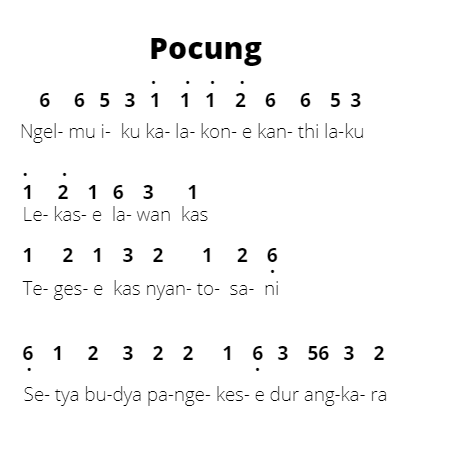
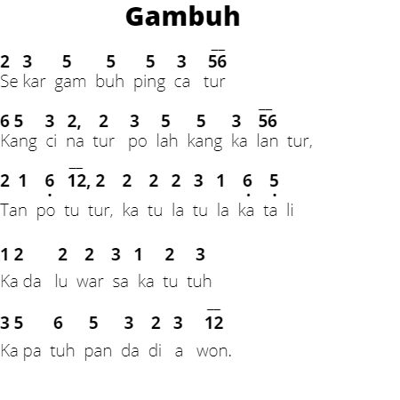

Serat Wedhatama
- Serat wedhatama iku salah sawijining seratane Kanjeng Gusti Pangeran Adipati Arya (KGPAA) Mangkunegara IV Kang wujude tembang.
- Serat wedhatama ngandhut piwulang luhur kanggo mbangun budi pekerti. Serat Wedhatama nduweni isi piwulang babagan budi pekerti utawa tumindak utama.
- Serat wedhatama asale saka basa Sansekerta, Wedhatama miturut kamus Kawi-Indonesia karangan L. Mardiwasito, saka tembung ''wedha'' kang tegese ilmu pangerten, lan tembung '‘tama'' kang tegese becik/utama.
- Pupuh Pangkur -> pada 1-14 (14 pada)
- Pupuh Sinom -> pada 15-32 (18 pada)
- Pupuh Pocung -> pada 33-47 (15 pada)
- Pupuh Gambuh -> pada 48-82 (35 pada)
- Pupuh Kinanthi -> pada 83-100 (18 pada)
Pocung
- Pupuh Pocung ing sajeroning serat wedhatama kadadeyan saka 15 pada.
Miturut maknane, tembang Pocung iku nggambarake manungsa kang wis dipocong utawa mati. Manungsa kang wis seda bakal lali ing sakebahe, turune sakepenake. Kabeh gumantung marang sanak sadulur kang ngrukti/ndongakake. Ing kene duwe pangerten yen tembang Pocung iku nggambarake manungsa iku lamun wis titi wanci tinimbalan dening Gusti Kang Maha Kawasa ora bisa apa-apa, anane mung sumarah utawa manut, mula diarani sakepenake.
Watake tembang Pocung iku sakepenake dhewe/luwes, lucu, lan gawe seneng. Mula biyasane kanggo ngandharake bab-bab kang ora serius lan bisa gawe gegojegan. Surasane kala mangsane ngemot cangkriman utawa banyolan (crita kang ngguyokake).
Tuladha Tembang pocung
Paugeran Tembang Pocung
Guru Gatra
: Cacahing gatra saben sapada
Guru Wilangan
: Cacahing wanda saben sagatra
Guru Lagu
: Tibaning swara ing pungkasaning gatra
| Guru gatra | Guru wilangan | Guru lagu |
|---|---|---|
| 4 | 12,6,8,12 | u,a,i,a |
Gambuh
Gambuh yaiku salah sawijining pupuh kang ana ing sajeroning Serat Wedhatama. Pupuh Gambuh ing sajeroning serat wedhatama kadadeyan saka 35 pada.
Tembang Gambuh nduweni teges tambuh, embuh, gambuh, jumbuh, lan tembung kang awanda mbuh. Watake tembang Gambuh yaiku nggambarake watak pawongan kang sansaya diwasa, menehi pepadhang utawa duweni sipat pitutur.
Pupuh kasebut uga ngemu werdi ngenani kabutuhan sosial antarane manungsa siji karo manungsa liyane. Pupuh Gambuh uga ngandhut piwulang marang kawula enom ngenani wigatine ngurmati lan ngregani wong liya, utamane marang wong kang luwih sepuh. Wujud pakurmatan lan nasehat nduweni gegayutan karo proses tumuju kabecikan.
Tuladha Tembang gambuh
Paugeran Tembang Pocung
Guru Gatra
: Cacahing gatra saben sapada
Guru Wilangan : Cacahing wanda saben sagatra
Guru Lagu
: Tibaning swara ing pungkasaning gatra
| Guru gatra | Guru wilangan | Guru lagu |
|---|---|---|
| 5 | 7,10,12,8,8 | u,u,i,u,o |
Purwokanti
Purwakanthi yaiku tetembungan kang padha swarane utawa kang padha aksarane. Purwakanthi kaperang dadi telu yaiku:
- - purwakanthi guru swara
- - purwakanthi guru sastra
- - purwakanthi guru basa (lumaksita).
A. Purwakanthi guru swara
Yaiku tetembungan sing nunggal swara, kayata:
- 1. Opor-opor bebek, mentas saka awake dhewek.
- 2. Kudu jujur, yen kepengen mujur.
- 3. Thenguk-thenguk nemu kethuk.
B. Purwakanthi guru sastra
yaiku tetembungan sing nuggal sastra (aksara), kayata :
- 1. Wanita sugih wawasan wasis asung wewarah.
- 2. Katula-tula katali
- 3. Sluman, slumun, slamet
C. Purwakanthi guru basa
yaiku tetembungan sing nunggal basa utawa tembung, kayata:
- 1. Kolik priya, priyagung anjani putra.
- 2. Witing klapa, kalapa kangmaksih mudha.
- 3. Kawi sekar, sekar pepundhen Sri Kresna.